The first season of Lower Decks starts off without much of a bang. The first episode doesn't feel like a “pilot” or “series premiere”... it sort of just feels like we got plunked down right in the middle of a standard season without much fanfare. The show wants to establish itself as its own thing, and not just a Star Trek parody/comedy show, but I think that's partly why the season starts off pretty slowly and leaves the audience a little confused as to what the show is trying to be. Things start to pick up a little bit in the last three episodes of the season.
Boimler, an ensign and stickler for the rules, is assigned by the captain to keep an eye on Mariner, a fellow ensign who likes to break the rules. Meanwhile, during second contact with the Galardonian High Council, Commander Ransom brings back a zombie virus to the ship.
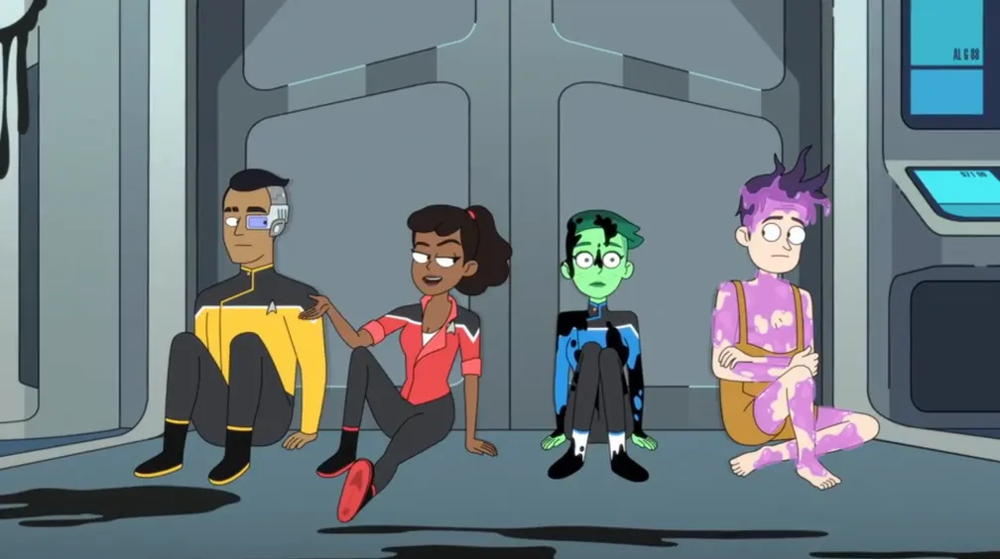
🔗︎
Minor references: The only notable references in this episode are the few things that Mariner blurts out in the last 30 seconds:
She dubs herself Boimler's mentor, calling him her “cha'DIch” (a Klingon legal title originally from TNG 3x17: Sins of the Father), which doesn't really make sense since that doesn't reference a mentor/mentee relationship, but they keep running with it in other episodes, so I'll concede.
She speaks of Spock being “Genesis-deviced” and fighting Khan, references to Star Trek films II and III, as well as “space whales”, probably a reference to film IV.
You'll be fine; Doc'll wave a light over it. — Mariner, effectively poking fun at Star Trek's medical gadgetry usually just being different tools with blinking lights being waved over the patient.
Thoughts: Well, it's an introduction, all right. I was a little surprised that the very first episode didn't have more of a tie-in with some sort of existing Trek story to give it an anchor in the universe. There were moments that made me laugh, yes, but after watching the whole thing, I just wasn't sure what the show's angle was... unless it was just going to be goo-based antics each week. The episode made me neither excited nor loath to see more, so I just gave it an average 3-star rating.
Mariner and Boimler escort a Klingon dignitary, but he steals the shuttle. Rutherford tries his hand at specialties other than engineering.
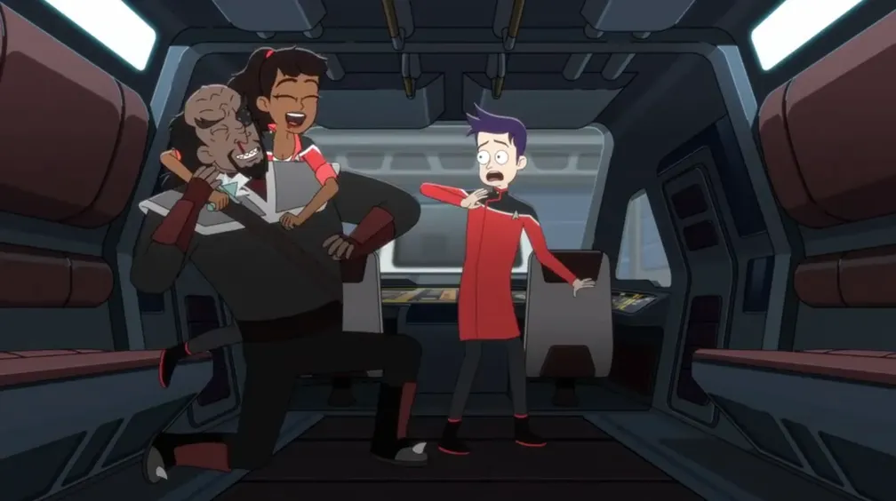
🔗️
“Jamaharon” is a sexual act that originates from the planet Risa. It is first mentioned in TNG 3x19: Captain's Holiday, but the specifics are never discussed on-screen.
🔗︎
Minor references:
While napping in the shuttle, Mariner talks in her sleep, saying “buried alive... marooned for eternity... moons of Nibia”. These are jumbled quotes from Kahn Noonien Singh in Star Trek II: The Wrath of Khan.
While searching for K'orin, Mariner and Boimler pass a pair of Kaelons. Boimler notes that they are “notoriously isolationist”. Kaelons appeared only once before, in TNG 4x22: Half a Life.
Boimler mistakes a Vendorian shapeshifter for an elderly Andorian. Vendorians only appeared once before, in TAS 1x06: The Survivor.
Thoughts: Again, yeah, there were moments that made me laugh (“All the ship's children have been ejected into space!”), but again, I feel like we've missed a series opener and jumped right into a mid-season slump. I can really only give this episode two stars.
Freeman, obsessed with making a name for the Cerritos, has the crew running around on a tight schedule. Ransom flubs up second contact, putting the ship under attack, but he cleans up his own mess as Mariner watches, conflicted about being impressed by his heroics.
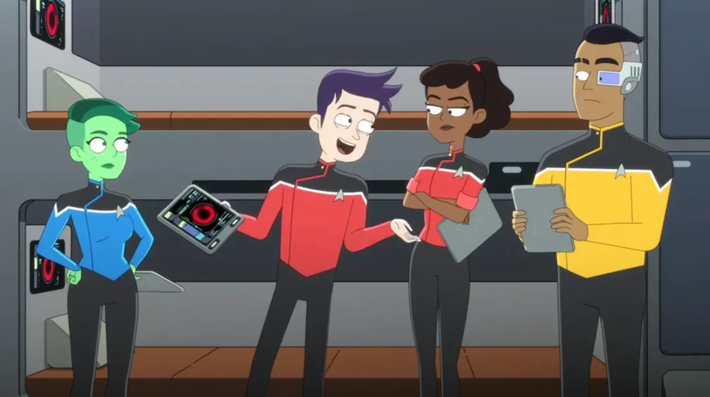
🔗️
At the end of the episode, the professor speaks about Chief Miles O'Brien, a recurring character on Star Trek: The Next Generation and then a main character in Star Trek: Deep Space Nine. The professor also speaks of one of the great birds of the galaxy. The “Great Bird of the Galaxy” was a nickname given to Star Trek creator Gene Roddenberry.
🔗︎
Minor references:
Alone in the turbolift, Boimler breaks the fourth wall by humming Jerry Goldsmith's theme for Star Trek: The Motion Picture, which was later famously reused for the main theme song of Star Trek: The Next Generation.
Ransom lists a few unexpected things that could happen on an away mission. “Horned gorillas” is a reference to the mugatos from TOS 2x16: Private Little War. “Sentient tar” is a reference to Armus from TNG 1x23: Skin of Evil.
The captain assigns the worst jobs to a recalcitrant Mariner. When that doesn't work, she instead promotes Mariner to lieutenant. Tendi accidentally ruins a fellow crewman's ascension and tries to fix it. Meanwhile, the terraforming ship they're towing leaks magic terraforming goo all over the Cerritos, turning the hull into organic material. Mariner and Freeman work together to fix it.
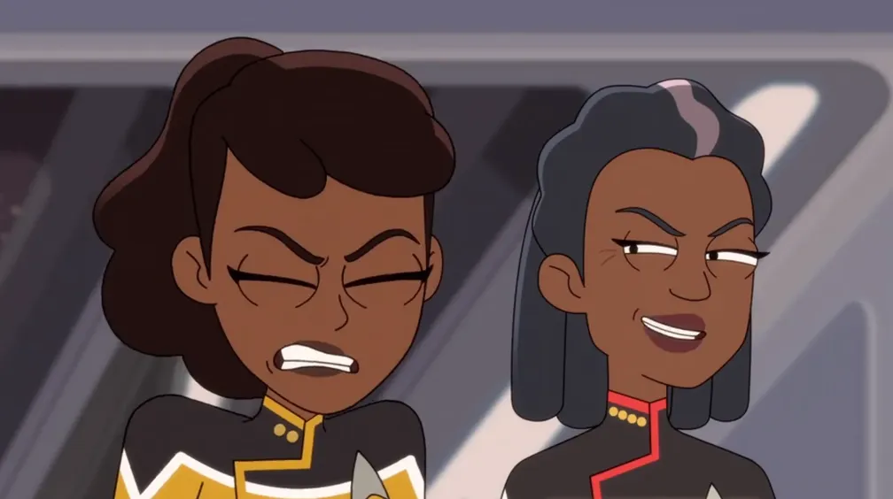
🐨️
Universal Koala
🔗︎
Minor references:
Rutherford (incorrectly) compares an ascended being to a “Q” or “The Traveler”. Q is an omnipotent being first introduced in TNG 1x01/02: Encounter at Farpoint, and the Traveler is a being who can visit other planes of existence while combining the concepts of space, time, and thought, and was first introduced in TNG 1x06: Where No One Has Gone Before.
Boimler blames his overheard comment on the holodeck character Moriarty, who was a sentient hologram introduced in TNG 2x03: Elementary, Dear Data.
“
The universe is balanced on the back of a giant koala! Why is he smiling? WHAT DOES HE KNOW?! — an ascending O'Connor
The Cerritos meets up with the Vancouver to solve some dispute over a moon. Mariner is suspicious of Boimler's girlfriend. Tendi and Rutherford geek out over T88 diagnostic devices.
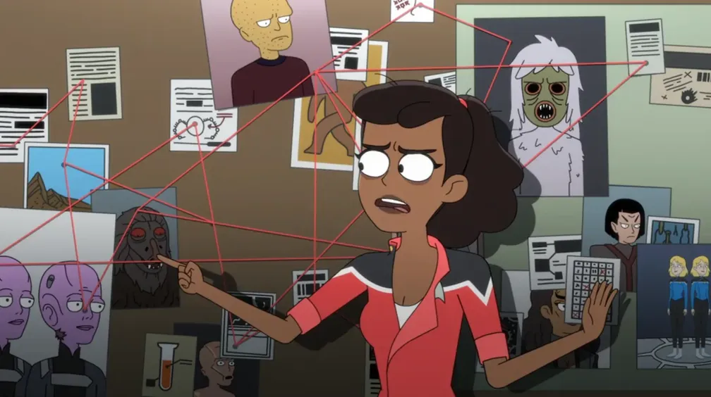
🔗️
In a flashback, Mariner's friend Angie speaks about Data's “evil brother” teaming up with the Borg. This is a reference to the two-part episode TNG 6x26 & 7x01: Descent.
🔗︎
Minor references:
Mariner offers to set Boimler up with the Phylosian tactical officer. The Phylosians are a species of sentient plants who appeared in TAS 1x07: The Infinite Vulcan.
Mariner lists several possible aliens that Boimler's girlfriend could really be in disguise. Among them, she mentions a salt succubus, a shape-shifting creature which first appeared in TOS 1x01: The Man Trap. She also mentions “one of those sexy people in rompers that murders you just for going on the grass” which is a reference to the Edo in the episode TNG 1x08: Justice.
There are lots of references on Mariner's red-yarned conspiracy board. Of the possibilities regarding Barb's identity, she mentions:
Thoughts: Perhaps a bit lacking in references and easter eggs thus far, the show chose this episode to throw in quite a few little things for long-time fans to find. There are other pictures on Mariner's conspiracy board that I haven't listed here (is that a Lal-type android from TNG 3x16: The Offspring?), but there are plenty of other resources online if you want to get all the references.
While the Cerritos deals with aliens claiming salvage rights on Starfleet debris, Rutherford and Tendi deal with a malfunctioning AI named Badgey. Meanwhile, Mariner and Boimler have to clean up fellow lower-decker Ensign Fletcher's failures.
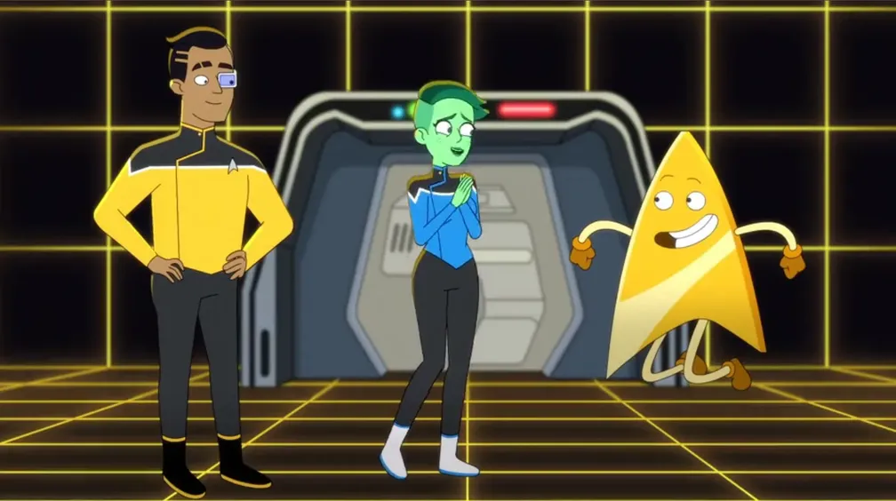
‼️
Very Important Episode There are some underlying storylines that will come up later, with continuing themes that you'll want to know about. One of those themes starts in this episode.
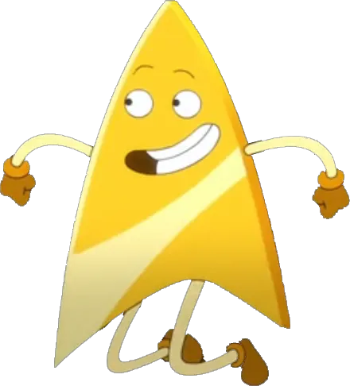
Badgey!
80
Starbase 80 mentioned! (Starbase 80 has never come up in the Star Trek franchise before, so we'll have to wait for a future episode to find out what it's all about!)
🔗︎
Minor references:
Rutherford wonders if the mysterious cargo might contain “cryo-frozen princesses”, referencing the episode ENT 2x11: Precious Cargo.
Rutherford lists off numerous characters that one might hang out with on the holodeck:
Sherlock Holmes – Data enjoyed playing the part of this detective on the holodeck, notably in the episode TNG 2x03: Elementary, Dear Data
Robin Hood – though not technically a holodeck simulation, the crew of the Enterprise‑D played the parts of Robin Hood and his merry men in a fantasy world created by Q in TNG 4x20: Qpid
Sigmund Freud – Data once consulted a holographic version of Freud to help him analyze his dreams in TNG 7x06: Phantasms
Cyrano de Bergerac – though not a holodeck character, Reginald Barclay once played this character in the eponymous play in TNG 4x19: The Nth Degree
Mariner's performance is questioned when the Cerritos is temporarily put under the command of an old friend of hers. When testing the transporter, Boimler gets partially phased out. Tendi has created a terrifying dog from scratch. Boimler and the dog are both sent to the mysterious “Division 14” medical group.
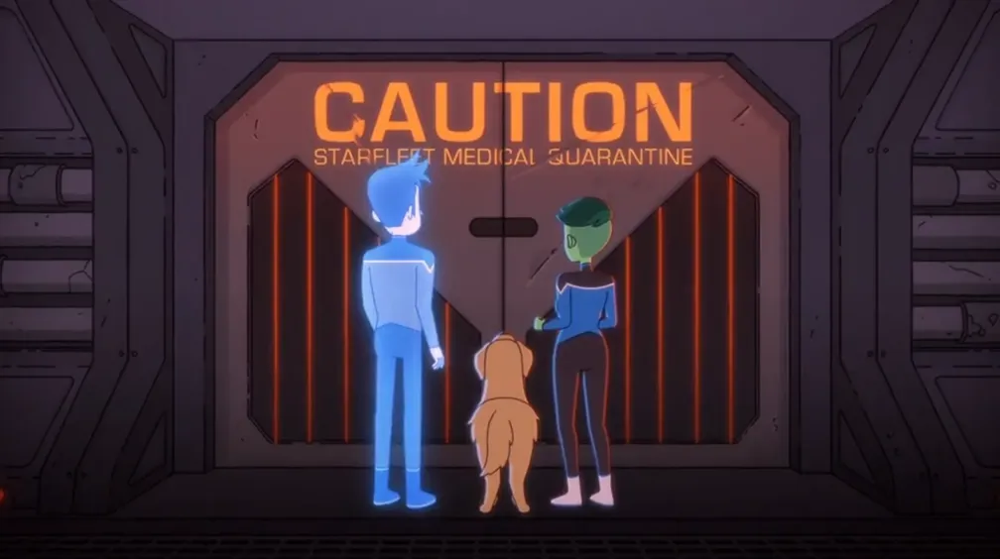
🔗︎
Minor references:
The senior officers leaving for an elite mission and another captain taking over the ship is a reference to TNG 6x10 & 6x11: Chain of Command. Mariner comments that she doesn't want “some babysitter Jellico-type hovering over us“. Jellico is the captain who took over for Picard in the referenced TNG episode.
Ensign Jenna is said to have been exposed to delta radiation, just like Captain Pike was in The Original Series. She has a similar scar to Pike's on her face and uses the same sort of robotic wheelchair with the single flashing, beeping light utilized by Pike in TOS 1x11 & 1x12: The Menagerie.
Mariner, Boimler, Tendi, and Rutherford are made to testify about seemingly unrelated events from the Cerritos during which Rutherford's headset keeps rebooting and Tendi accidentally joins an elite team on a top-secret mission.
Mariner says there's nothing to do on Earth but hang out at vineyards and soul food restaurants. She is referencing Jean-Luc Picard's vineyard at Château Picard (Star Trek: Picard) and Benjamin Sisko's father's Creole restaurant in New Orleans (Star Trek: Deep Space Nine).
During their mission, Shaxs tells Rutherford to distract the guard with his “fan dance”, referencing Uhura's fan dance in Star Trek V: The Final Frontier.
Suffering from nitrogen intoxication, Billups mumbles “Mark Twain's got a gun!”, referencing the Next Generation crew's interaction with Mark Twain in TNG 5x26 & 6x01: Time's Arrow. Then he says “Tasha, no! The garbage bag's behind you!” referencing Armus, a black tar-like entity from TNG 1x23: Skin of Evil.
Boimler asks several hypothetical questions about whether Starfleet officers always know what's happening. “Did Picard know about the Borg?” refers to the Borg's first appearance in TNG 2x16: Q Who. “Did Kirk know about that giant Spock on Phylos?” references TAS 1x07: The Infinite Vulcan. “Did Doctor Crusher know about that ghost in the lamp thing...” is a reference to TNG 7x14: Sub Rosa.
Boimler concludes his speech by shouting "Drumhead!" referring to another courtroom episode, TNG 4x24: The Drumhead.
“
You may go un-eeled... for now. — Clar
Thoughts: I like this episode. I feel like Lower Decks should more often be a vehicle for self-parody of the Trek franchise, like it is here. I hate to think I'm giving this a higher score just because it has a cameo appearance and numerous references to other Star Trek series, but honestly, I think those are the types of things that make for a good episode of Lower Decks. This show is an opportunity to patch up any silly choices from previous art with equally silly antics, and I don't think the show takes enough advantage of that.
Freeman orders Mariner to therapy. Mariner hijacks one of Boimler's holodeck programs, turning it into an "awesome movie" where she's the villain, pitted against the captain. She starts to take it too far until she ends up having to fight the holographic version of herself. Boimler accidentally finds out that Mariner is Freeman's daughter.
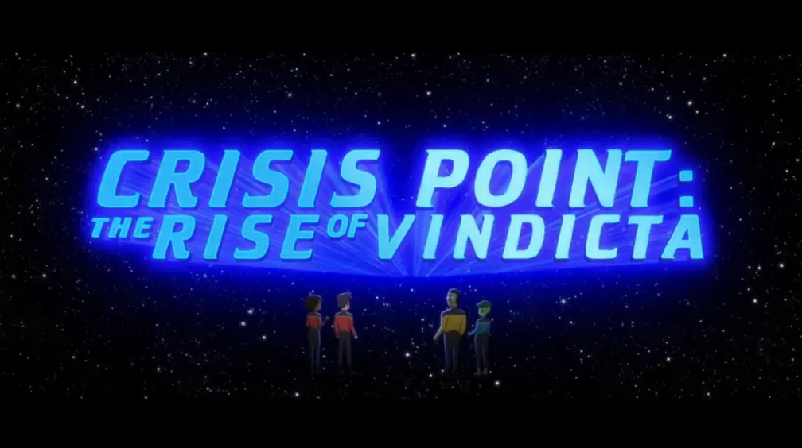
🔗︎
Minor references:
Mariner says that Boimler is “kind of a Xon”. Xon was a character written for Star Trek: The Motion Picture who did not make it to the final cut.
The gratuitous views of the Cerritos as the crew fly around it in a shuttlecraft is a hallmark of Star Trek films.
There is an almost absurd amount of lens flare on the bridge of the Cerritos, poking fun at the use of the cinematic device in Star Trek films, particularly in Star Trek [2009].
Mariner says that she dressed up as Toby Targ every Halloween. Toby is a character that writes holoprograms for children, first mentioned in VOY 7x20: Author, Author.
Thoughts: The idea of doing a movie is cute, and I like the little meta touches like changing the aspect ratio to a wider-screen format and the gang having to duck to avoid getting hit by the fly-out credits, but the idea of Mariner working out issues by confronting a holographic version of her mother, and later a holographic version of herself, is a little... unsubtle, no?
Boimler accidentally reveals that Freeman and Beckett are mother and daughter. Tendi mentors an exocomp officer. The Cerritos is attacked by Pakleds!
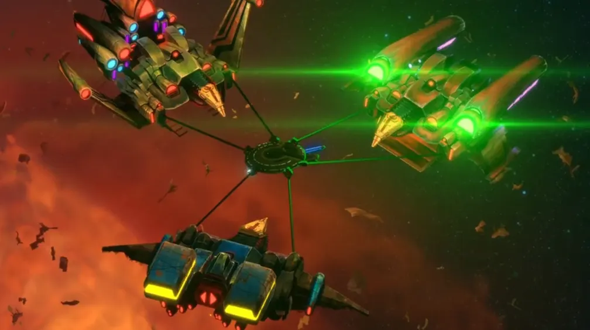
‼️
Very Important Episode You'll want to watch this one to keep apprised of important plot developments.
Badgey!
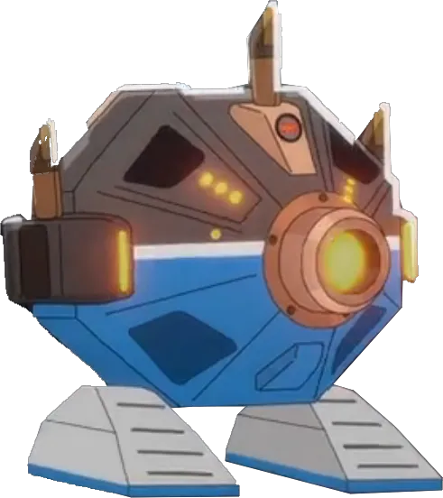
Peanut Hamper!
🔗️
The Cerritos visits Beta III, where the inhabitants had started worshiping Landru again. This is a rehashing of the story from TOS 1x21: The Return of the Archons.
🔗️
Tendi's new protégé is an exocomp, a sentient computer that was originally introduced in TNG 6x09: The Quality of Life.
🔗️
The Pakleds are a not-so-intelligent race of aliens that the Enterprise‑D first dealt with in TNG 2x17: Samaritan Snare. They appeared several times as background characters in Star Trek: Deep Space Nine, but the TNG episode is the only one where they are a real part of the story. Because the idea of an intellectually-underdeveloped race having somehow developed faster-than-light space travel is rather crazy, the Pakleds are the perfect fodder for the Lower Decks comedy style.
💁♂️💁♀️
Spoiler » Jonathan Frakes reprises his role as Captain William Riker. Marina Sirtis reprises her role as Commander Deanna Troi. Both of them had transferred to the USS Titan at the end of Star Trek Nemesis, about a year before this episode takes place.
🎼
During the final battle, the triumphant score heard in the background is the end credits music from Star Trek: First Contact, adapted from Jerry Goldsmith's original theme music for Star Trek: The Motion Picture.
🔗︎
Minor references:
Ransom makes a meta-reference to the “TOS-era”, referring to “The Original Series”, but his initialism stands for “Those Old Scientists”.
Freeman says she hates seeing a perfectly-good society being destroyed by a “Gamester of Triskelion”, referencing the eponymous episode TOS 2x16: The Gamesters of Triskelion.
Mariner mentions Levy's theory that Wolf 359 was an “inside job”. This references the TNG story TNG 3x26 & 4x01: The Best of Both Worlds and the real-world popular conspiracy theory that the attacks on September 11, 2001 were orchestrated by the government. Levy also says that the Changelings aren't real and the Dominion War never happened, which are major story lines in Star Trek: Deep Space Nine.
When the Pakleds start to board the Cerritos, Mariner reveals stashes of contraband she's hidden, and Billups picks up a Space Fun Helmet. The helmet was a real-world children's toy released in 1976, marketed as a Star Trek helmet, even though no such helmet had ever been used in Star Trek. At least, not until now.
Mariner threatens to feed Boimler to an Armus, referencing the malevolent being from TNG 1x23: Skin of Evil.
Spoiler » Riker says that he was watching the first Enterprise on the holodeck with “Archer and those guys”, referring to the stories from Star Trek: Enterprise. He breaks the fourth wall by saying that they “had a long road getting from there to here”, directly quoting the first line of the series' theme song. He's also been known to watch stories from Enterprise in the holodeck previously, as shown in the disappointing series finale, ENT 4x22: These are the Voyages....
Finally, Spoiler » Riker and Troi discuss whether they should take the “little horga'hn” to “Little Risa”. Risa is a pleasure planet first introduced in TNG 3x19: Captain's Holiday, and the horga'hn is their fertility symbol. When displayed, it indicates that the owner seeks jamaharon.
Thoughts: Well, they definitely pulled out the stops for our first season finale. There's a lot to see here with some good music, a classic space battle, and some guest stars! Doing guest appearances on an animated show is such a smart way to go, too. Since they don't have to be on camera, you can have the actors record their lines practically anywhere, and you don't have to pay them nearly as much. Again, I know that Lower Decks wants to be its own thing, but I really thought it would be taking more advantage of its medium to bring back old characters and tie up loose ends. Anyway, this is a pretty great finale, but I'm only giving it 4.5 stars since there are still some better episodes to come.
This is an independent fan site and is not affiliated with or endorsed by Paramount Global. Star Trek and all related marks, logos, and characters are the property of Paramount Global. Reset Cookie Preferences
"Franchise Episode" tells you the order in which episodes from ANY/ALL Star Trek television shows aired or streamed for the first time. This number excludes movies, TOS's "The Cage", and the "Very Short Treks" web shorts. click or scroll to close
1st, 2nd, and 3rd place awards reflect the best, but also the most representative episodes of the series. So, even excellent one-off or “special” episodes often aren't considered. click or scroll to close
Ex Astris Scientia is an independent website devoted to the Star Trek universe, and includes reviews of episodes on a scale of 0 to 10. Visit the site at ex‑astris‑scientia.org. click or scroll to close
IMDb ratings re-distributed on a 2-9 scale. Scores of 0, 1, and 10 are reserved for outliers (determined by a z-score less than -2.5 or greater than 2.5). User ratings on IMDb for the episodes in Star Trek: Lower Decks range from 6.9 to 8.9. IMDb ratings were retrieved on January 26, 2026. click or scroll to close


 @c6reviews.
@c6reviews.